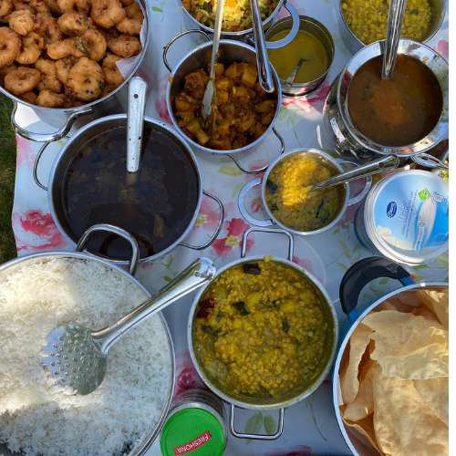
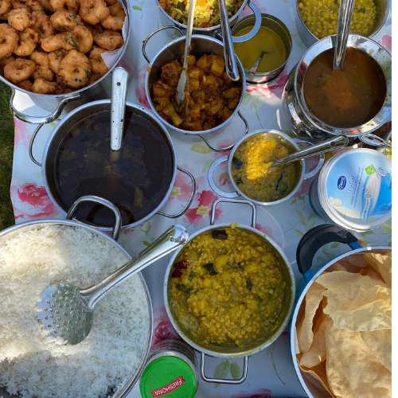

Gardening:
Everyone needs inspiration once in a while. After all, inspiration is the fuel to creativity and passion!. Exposure to nature and greenery is great for our health and mental wellbeing.
Gardening is a process, and like any process, you’ll have good and bad days, but any time spent reconnecting with nature is well worth multiple tries.
“Flowers always make people better, happier, and more helpful; they are sunshine, food, and medicine for the soul.” Luther Burbank
“Food brings people together on many different levels. It’s nourishment of the soul and body; it’s truly love.” To me, food is as much about the moment, the occasion, the location and the company as it is about the taste. I love to cook , invite friends and party
 
